官方证据与版本台账
从章节结论回到政府原文；下载留存文件，检查日期、版本和适用边界。
这里保存的是本轮实际取得的官方原件或网页下载。网页文本提取、官方文件页面渲染、浏览器截图和本库绘制图分别标注。文件SHA-256指纹可用于检查下载是否改变；它不代表政府给本报告背书。
证据覆盖与核验日期
| 类别 | 本轮情况 |
|---|---|
| 省级类别 | 8个主类别及医疗、科技、执法子通路；申请方式、材料、费用、积分、名额、邀请和社区名单。 |
| 联邦衔接 | 经济移民、省提名、工作许可、毕业工作许可、指定学校、课程代码、生活资金和配偶政策。 |
| 院校与职业 | 10个具体项目；国际招生、收费和课程要求；职业官方分类原件、监管和技工核查入口。 |
| 版本边界 | 阿省及院校2026-09-24核对；职业一般要求为2026-09-17留存的2021分类版本。截图以各记录日期为准。 |
| 本库图表 | 5张路径图为研究整理，不伪装政府原图；名额及评分来源在图下注明。 |
78项来源记录
联邦2026—2028移民水平计划
官方标题：Supplementary Information for the 2026-2028 Immigration Levels Plan
https://www.canada.ca/en/immigration-refugees-citizenship/corporate/mandate/corporate-initiatives/levels/supplementary-immigration-levels-2026-2028.html
发布机构：加拿大联邦政府 · 核对/留存日期：2026-09-24
下载留存原件（官方网页下载／原始数据文件）
查看文本提取（辅助检索，不代替原件版式）
文件指纹：7f52b26a7098bf46cf1546d96bb1372015035b084c8ce632bf51d44b2312d8e2
联邦技术工人计划资格
官方标题：Express Entry
https://www.canada.ca/en/immigration-refugees-citizenship/services/immigrate-canada/express-entry/who-can-apply/federal-skilled-workers.html
发布机构：加拿大联邦政府 · 核对/留存日期：2026-09-24
下载留存原件（官方网页下载／原始数据文件）
查看文本提取（辅助检索，不代替原件版式）
文件指纹：6b6ea3f39b4f434f5d866d02c994cc0f8aa0f84a50c79475481a192669bd827e
加拿大经验类移民资格
官方标题：Express Entry
https://www.canada.ca/en/immigration-refugees-citizenship/services/immigrate-canada/express-entry/who-can-apply/canadian-experience-class.html
发布机构：加拿大联邦政府 · 核对/留存日期：2026-09-24
下载留存原件（官方网页下载／原始数据文件）
查看文本提取（辅助检索，不代替原件版式）
文件指纹：ed52c5c10720e22585eb9106df5d81e54d8116ad0ba8129073bb7569c2c58d7f
联邦技工计划资格
官方标题：Express Entry
https://www.canada.ca/en/immigration-refugees-citizenship/services/immigrate-canada/express-entry/who-can-apply/federal-skilled-trades.html
发布机构：加拿大联邦政府 · 核对/留存日期：2026-09-24
下载留存原件（官方网页下载／原始数据文件）
查看文本提取（辅助检索，不代替原件版式）
文件指纹：3dfc354816a5a08972478499bfbec0c43b59ab600fdd22c9394160f269ea4c2d
联邦省提名移民说明
官方标题：Immigrate as a provincial nominee
https://www.canada.ca/en/immigration-refugees-citizenship/services/immigrate-canada/provincial-nominees.html
发布机构：加拿大联邦政府 · 核对/留存日期：2026-09-24
下载留存原件（官方网页下载／原始数据文件）
查看文本提取（辅助检索，不代替原件版式）
文件指纹：4f883ffdf08022c1d2339d501c38513900ceeaeab3128e0482acc35df5ee4687
毕业工作许可：谁能申请
官方标题：Post-graduation work permit
https://www.canada.ca/en/immigration-refugees-citizenship/services/study-canada/work/after-graduation/eligibility.html
发布机构：加拿大联邦政府 · 核对/留存日期：2026-09-24
下载留存原件（官方网页下载／原始数据文件）
查看文本提取（辅助检索，不代替原件版式）
文件指纹：0a932c7f7c51e1fa5a32ef468e7bc42d4d86e68fe72a017c676bc7de5c471934
毕业工作许可：合格学习领域
官方标题：Post-graduation work permit
https://www.canada.ca/en/immigration-refugees-citizenship/services/study-canada/work/after-graduation/eligibility/field-of-study.html
发布机构：加拿大联邦政府 · 核对/留存日期：2026-09-24
下载留存原件（官方网页下载／原始数据文件）
查看文本提取（辅助检索，不代替原件版式）
文件指纹：8d1e6e15acd3d6a3976133c1e13436f6f0090b9081ccb58e0f56b1074bf58f51
阿省配额、库存与邀请
官方标题：Alberta Advantage Immigration Program – Processing information
https://www.alberta.ca/aaip-processing-information
发布机构：阿尔伯塔省政府 · 核对/留存日期：2026-09-24
下载留存原件（官方网页下载／原始数据文件）
查看文本提取（辅助检索，不代替原件版式）
文件指纹：1c349dfba7f35f2ac55b55591640353a6f9b1833f9d6b2994180a323faaff49c
阿尔伯塔机会类别资格
官方标题：Alberta Opportunity Stream – Eligibility
https://www.alberta.ca/aaip-alberta-opportunity-stream-eligibility
发布机构：阿尔伯塔省政府 · 核对/留存日期：2026-09-24
下载留存原件（官方网页下载／原始数据文件）
查看文本提取（辅助检索，不代替原件版式）
文件指纹：5f66d75f18ba9fec46a293b5dfd49180a0467196ea32d82f0b3273c49ee97a5e
{kind=link}
阿尔伯塔快速通道类别资格
官方标题：Alberta Express Entry Stream – Eligibility
https://www.alberta.ca/aaip-alberta-express-entry-stream-eligibility
发布机构：阿尔伯塔省政府 · 核对/留存日期：2026-09-24
下载留存原件（官方网页下载／原始数据文件）
查看文本提取（辅助检索，不代替原件版式）
文件指纹：4940c7268b496abea61b92338b8dcf3fea2ec66268860725abbc2622d895acbc
专设医疗通路资格
官方标题：Dedicated Health Care Pathway
https://www.alberta.ca/dedicated-health-care-pathway
发布机构：阿尔伯塔省政府 · 核对/留存日期：2026-09-24
下载留存原件（官方网页下载／原始数据文件）
查看文本提取（辅助检索，不代替原件版式）
文件指纹：ee0ad93c9213f491892e9a8dc5522b17054046f46b73f00bfcba369b6e9a8007
乡村振兴类别资格
官方标题：Rural Renewal Stream – Eligibility
https://www.alberta.ca/aaip-rural-renewal-stream-eligibility
发布机构：阿尔伯塔省政府 · 核对/留存日期：2026-09-24
下载留存原件（官方网页下载／原始数据文件）
查看文本提取（辅助检索，不代替原件版式）
文件指纹：7114c765bfa989b00f5249b5c1b87853bf9db4bec94fc1936240961c95033dc3
{kind=link}
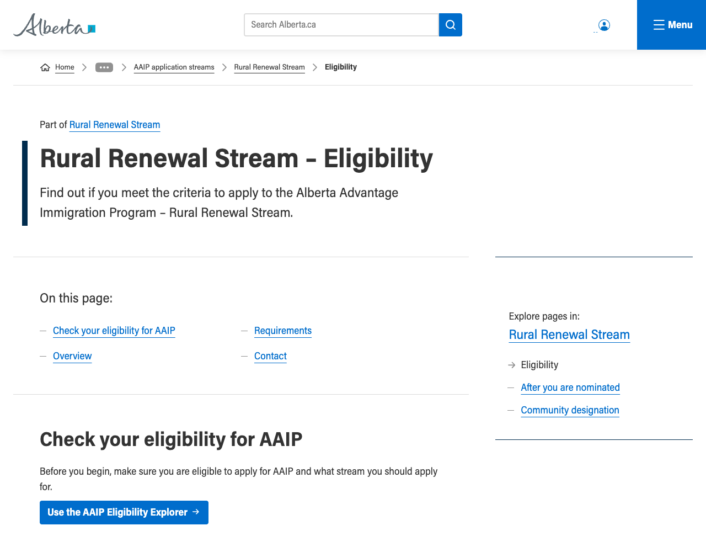
旅游与酒店类别资格
官方标题：Tourism and Hospitality Stream – Eligibility
https://www.alberta.ca/tourism-and-hospitality-stream-eligibility
发布机构：阿尔伯塔省政府 · 核对/留存日期：2026-09-24
下载留存原件（官方网页下载／原始数据文件）
查看文本提取（辅助检索，不代替原件版式）
文件指纹：21e973af809901645d28866b0236694aee9ae981eb9ce854c51d5a29b69cf6c1
{kind=link}
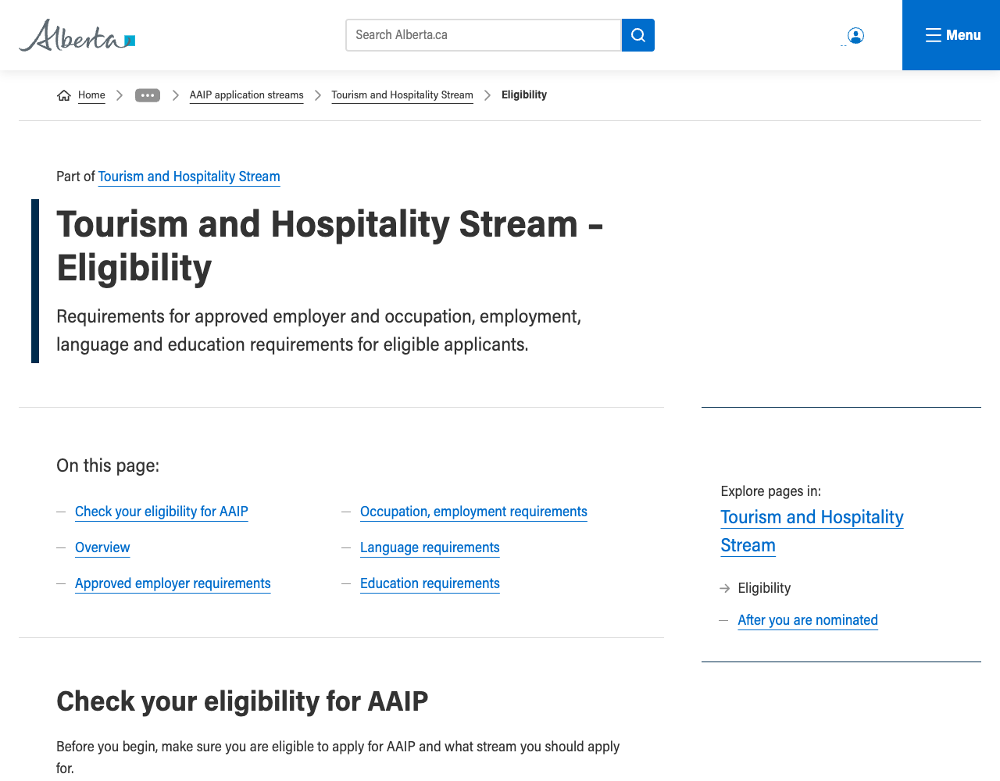
乡村企业家类别资格
官方标题：Rural Entrepreneur Stream – Eligibility
https://www.alberta.ca/aaip-rural-entrepreneur-stream-eligibility
发布机构：阿尔伯塔省政府 · 核对/留存日期：2026-09-24
下载留存原件（官方网页下载／原始数据文件）
查看文本提取（辅助检索，不代替原件版式）
文件指纹：2e81909b7c0b41c85193d0c310ba31da07ae15cde17e734aba2a83be0e6b2d48
毕业生企业家类别资格
官方标题：Graduate Entrepreneur Stream – Eligibility
https://www.alberta.ca/aaip-graduate-entrepreneur-stream-eligibility
发布机构：阿尔伯塔省政府 · 核对/留存日期：2026-09-24
下载留存原件（官方网页下载／原始数据文件）
查看文本提取（辅助检索，不代替原件版式）
文件指纹：793d4d6217d9bc34ee43041dc0fb7ef064bfa350b65b21235de4b39d06b503fe
海外毕业生企业家类别总览
官方标题：Foreign Graduate Entrepreneur Stream
https://www.alberta.ca/aaip-foreign-graduate-entrepreneur-stream
发布机构：阿尔伯塔省政府 · 核对/留存日期：2026-09-24
下载留存原件（官方网页下载／原始数据文件）
查看文本提取（辅助检索，不代替原件版式）
文件指纹：c490a99d043515e6898f398b40f20a6c09bb3b49cc5e2c40efeb753acad87ee9
农场类别资格
官方标题：Farm Stream – Eligibility
https://www.alberta.ca/aaip-farm-stream-eligibility.aspx
发布机构：阿尔伯塔省政府 · 核对/留存日期：2026-09-24
下载留存原件（官方网页下载／原始数据文件）
查看文本提取（辅助检索，不代替原件版式）
文件指纹：6510a5262c8789c159b224ea3a8a90d6d1a33d7376acb03fa41917ab379b5444
海外毕业生企业家类别资格
官方标题：Foreign Graduate Entrepreneur Stream – Eligibility
https://www.alberta.ca/aaip-foreign-graduate-entrepreneur-stream-eligibility
发布机构：阿尔伯塔省政府 · 核对/留存日期：2026-09-24
下载留存原件（官方网页下载／原始数据文件）
查看文本提取（辅助检索，不代替原件版式）
文件指纹：816fd8e659512ead62645cfa2c36cc1e46c9b8668fc7c2d04ad04ac80ba39916
国家职业分类官方入口
官方标题：National Occupational Classification (国家职业分类（National Occupational Classification，NOC）) 2021 Version 1.0
https://www.statcan.gc.ca/en/subjects/standard/noc/2021/indexV1
发布机构：加拿大联邦政府 · 核对/留存日期：2026-09-24
下载留存原件（官方网页下载／原始数据文件）
查看文本提取（辅助检索，不代替原件版式）
文件指纹：ffc9a6984b15caafcf13f76f1aa0e95f44ce6c91eaa42deb4e1580d10f27d8fa
外国工人的配偶及家属工作许可
官方标题：Open work permits for family members of foreign workers
https://www.canada.ca/en/immigration-refugees-citizenship/services/work-canada/special-instructions/spouses-dependent-children.html
发布机构：加拿大联邦政府 · 核对/留存日期：2026-09-24
下载留存原件（官方网页下载／原始数据文件）
查看文本提取（辅助检索，不代替原件版式）
文件指纹：08ef02e51015053df213213c1c3c2e42ef10ac95e5e3ddb300c5112258953007
国际学生配偶工作许可
官方标题：International students Help your spouse or common-law partner work in Canada
https://www.canada.ca/en/immigration-refugees-citizenship/services/study-canada/work/help-your-spouse-common-law-partner-work-canada.html
发布机构：加拿大联邦政府 · 核对/留存日期：2026-09-24
下载留存原件（官方网页下载／原始数据文件）
查看文本提取（辅助检索，不代替原件版式）
文件指纹：ff2e07873ee6a2d26a65be3cc7b5e931b7b9b27a4c2ca4b295be1b8d090efa3c
外国工人适用工资资料
官方标题：Hire a temporary foreign worker in a high-wage or low-wage position
https://www.canada.ca/en/employment-social-development/services/foreign-workers/median-wage.html
发布机构：加拿大联邦政府 · 核对/留存日期：2026-09-24
下载留存原件（官方网页下载／原始数据文件）
查看文本提取（辅助检索，不代替原件版式）
文件指纹：7dfb4c20145530e93f3ed175aeeff33a75ccfe6939104848bf045a114ed5f7d0
科技通路44个合格职业原表
官方标题：abtechlist
https://www.alberta.ca/system/files/custom_downloaded_images/lbr-aaip-tech-pathway-nocs-codes-list.pdf
发布机构：阿尔伯塔省政府 · 核对/留存日期：2026-09-24
下载留存原件（官方PDF文件）
文件指纹：e7524afa56409d5f1925981f7707d3a8e7ce34ea10b20a651d26ca9e706b783f
{kind=link}
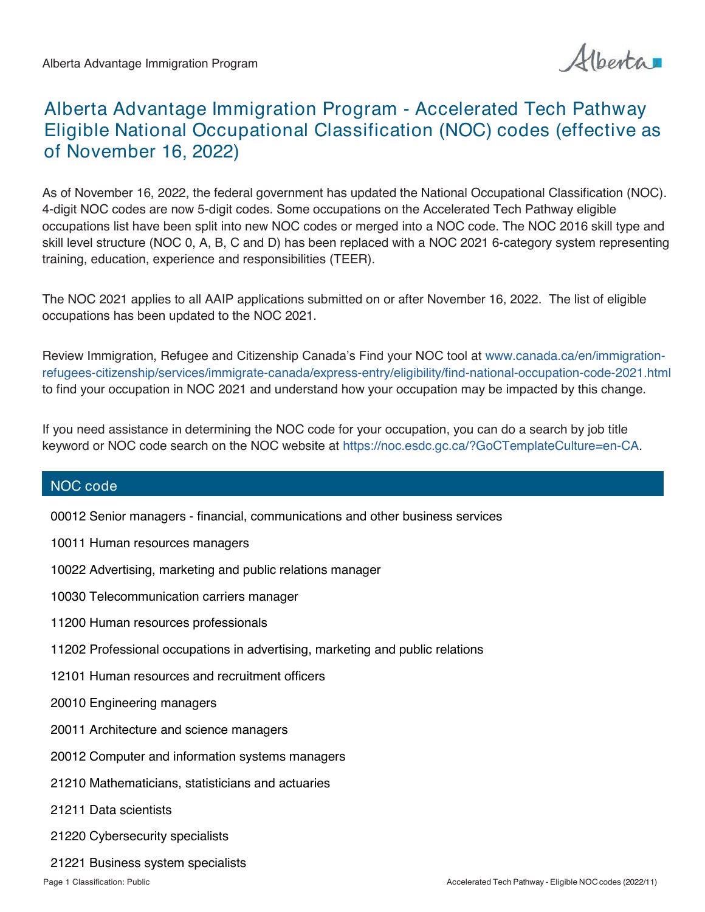
{kind=link}
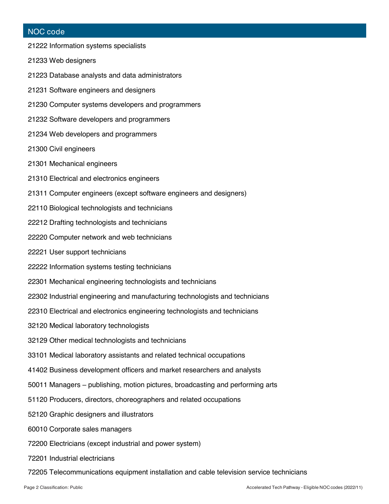
科技雇主27个合格行业原表
官方标题：abtechindustry
https://www.alberta.ca/system/files/custom_downloaded_images/lbr-aaip-tech-pathway-naics-codes-list.pdf
发布机构：阿尔伯塔省政府 · 核对/留存日期：2026-09-24
下载留存原件（官方PDF文件）
文件指纹：cd350c38266dc270848d6f8059e32494f2b88cee5f77ef19778b5078b646e041
{kind=link}
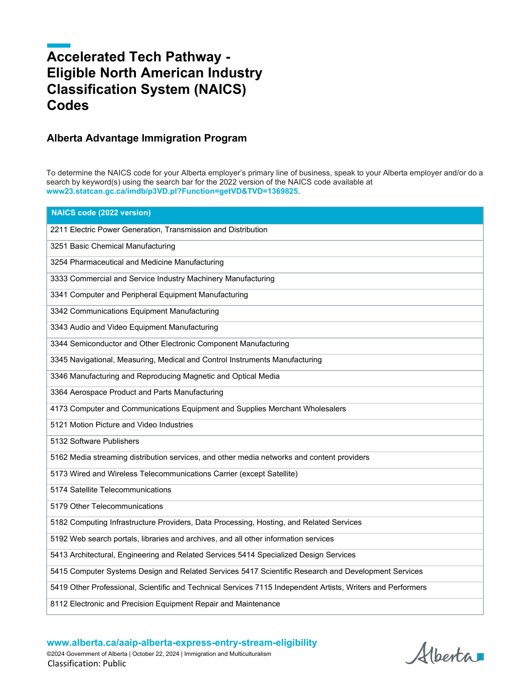
省级计划总览：八个主类别
官方标题：Alberta Advantage Immigration Program
https://www.alberta.ca/alberta-advantage-immigration-program
发布机构：阿尔伯塔省政府 · 核对/留存日期：2026-09-24
下载留存原件（官方网页下载／原始数据文件）
查看文本提取（辅助检索，不代替原件版式）
文件指纹：cd18f0049d683e2d3990b2ec1abedd4541c52cb33c83cf59abe68cbe7e6da518
{kind=link}
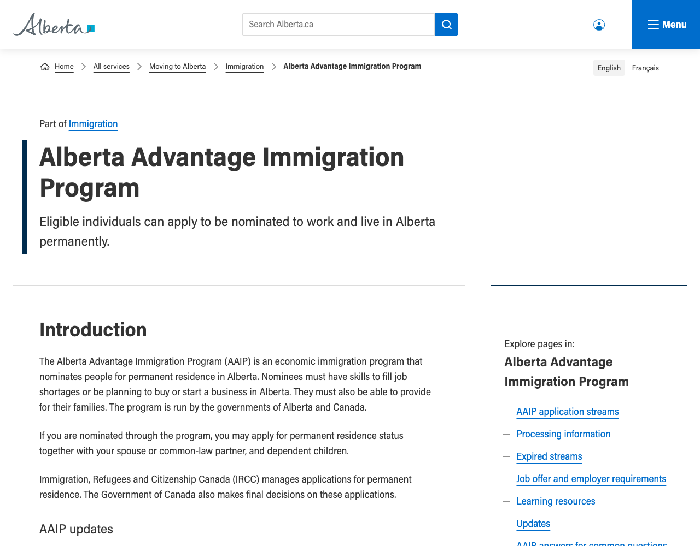
省级政策更新公告
官方标题：Alberta Advantage Immigration Program – Updates
https://www.alberta.ca/aaip-updates
发布机构：阿尔伯塔省政府 · 核对/留存日期：2026-09-24
下载留存原件（官方网页下载／原始数据文件）
查看文本提取（辅助检索，不代替原件版式）
文件指纹：afa63fcc854620a096ed12804a924653ff260813e5ad5b0988ebc5cee7793af6
阿省配额、库存与最新邀请
官方标题：Alberta Advantage Immigration Program – Processing information
https://www.alberta.ca/aaip-processing-information
发布机构：阿尔伯塔省政府 · 核对/留存日期：2026-09-24
下载留存原件（官方网页下载／原始数据文件）
查看文本提取（辅助检索，不代替原件版式）
文件指纹：1c349dfba7f35f2ac55b55591640353a6f9b1833f9d6b2994180a323faaff49c
{kind=link}
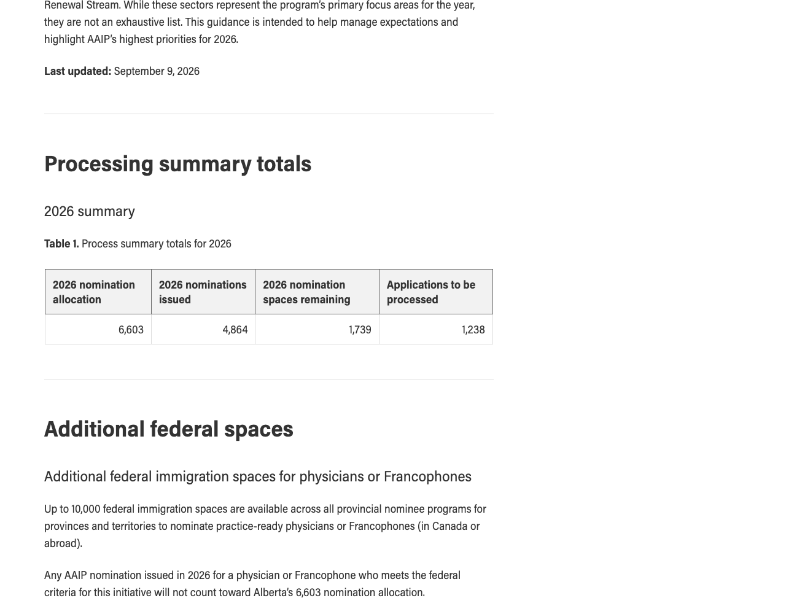
工人意向表达、邀请及完整申请
官方标题：How to apply to 阿尔伯塔优势移民计划（Alberta Advantage Immigration Program，AAIP） worker streams
https://www.alberta.ca/how-to-apply-to-aaip-worker-streams
发布机构：阿尔伯塔省政府 · 核对/留存日期：2026-09-24
下载留存原件（官方网页下载／原始数据文件）
查看文本提取（辅助检索，不代替原件版式）
文件指纹：60f29a67571283218ac708d25c7bb3b4b6bbeb9f990be2c2acbb6224a1c78f39
职位与雇主资格
官方标题：Job offer and employer requirements
https://www.alberta.ca/job-offer-and-employer-requirements
发布机构：阿尔伯塔省政府 · 核对/留存日期：2026-09-24
下载留存原件（官方网页下载／原始数据文件）
查看文本提取（辅助检索，不代替原件版式）
文件指纹：79cc626c8661a71e6c6f74f45db8575882906a83219cb6ebb2100bd34f0cca64
工人申请官方材料清单
官方标题：worker-docs
https://www.alberta.ca/system/files/jeti-aaip-worker-streams-document-checklist.pdf
发布机构：阿尔伯塔省政府 · 核对/留存日期：2026-09-24
下载留存原件（官方PDF文件）
文件指纹：85389a2fb1bae23c3cf01a5186107132b9fc8885906dcf8587883f8ebf6ce7dc
{kind=link}
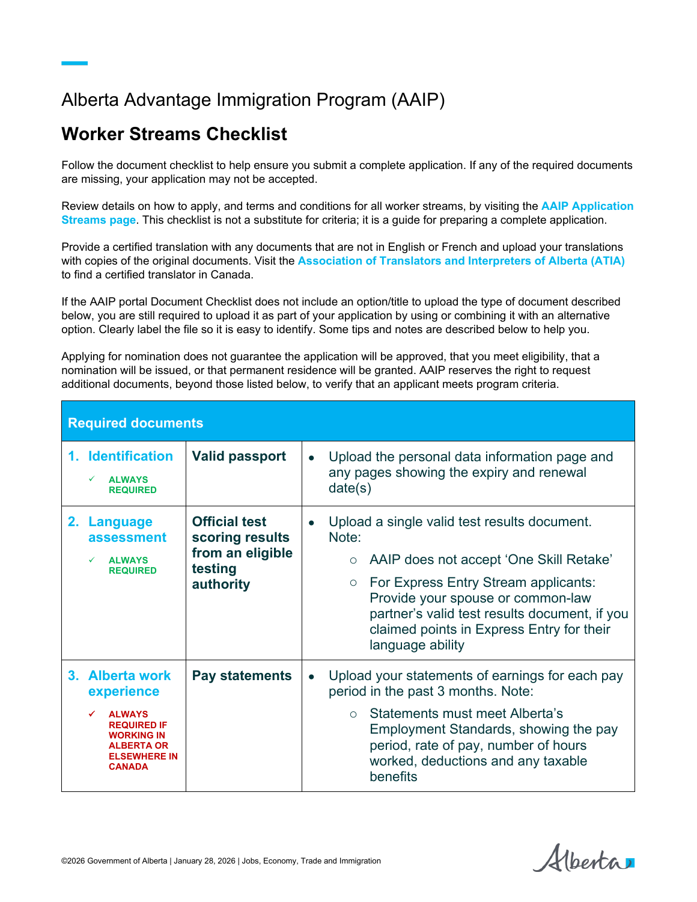
省计划官方收费表
官方标题：fees
https://www.alberta.ca/system/files/jeti-aaip-fee-schedule.pdf
发布机构：阿尔伯塔省政府 · 核对/留存日期：2026-09-24
下载留存原件（官方PDF文件）
文件指纹：d6c8ce8d424f0cd0305667fb7e6041ea7e14352a1aade27d565201bd69adab55
{kind=link}
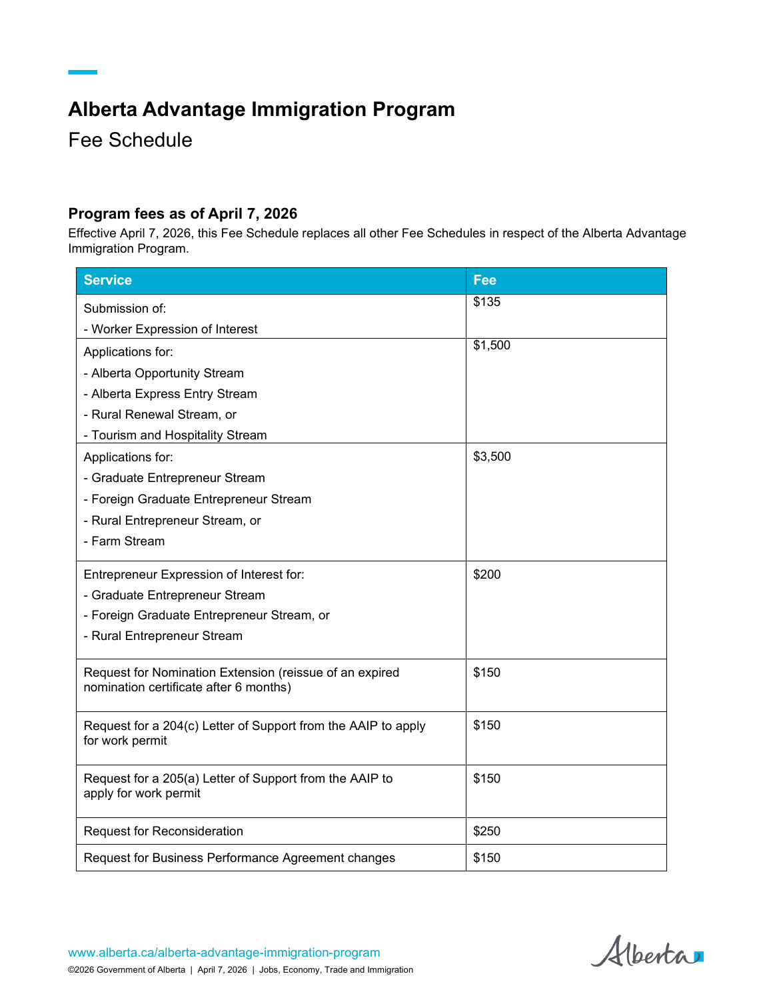
乡村振兴指定社区完整名单
官方标题：Rural Renewal Stream – Community designation
https://www.alberta.ca/aaip-rural-renewal-stream-community-designation
发布机构：阿尔伯塔省政府 · 核对/留存日期：2026-09-24
下载留存原件（官方网页下载／原始数据文件）
查看文本提取（辅助检索，不代替原件版式）
文件指纹：527d09ec19ee62678ac879716071e6e7bf4ebf266830f7064548de9a8d505f2e
省计划官方资源与表格
官方标题：Alberta Advantage Immigration Program – Learning resources
https://www.alberta.ca/aaip-resources
发布机构：阿尔伯塔省政府 · 核对/留存日期：2026-09-24
下载留存原件（官方网页下载／原始数据文件）
查看文本提取（辅助检索，不代替原件版式）
文件指纹：d00bad3ae89fa0568299a0f1215254413114e4e0900ac2d8650ee41f07d82576
机会类别获得提名后的操作
官方标题：Alberta Opportunity Stream – After you are nominated
https://www.alberta.ca/aaip-alberta-opportunity-stream-after-you-are-nominated
发布机构：阿尔伯塔省政府 · 核对/留存日期：2026-09-24
下载留存原件（官方网页下载／原始数据文件）
查看文本提取（辅助检索，不代替原件版式）
文件指纹：0b5786452565fe122faa0df0e9f5ce20d87d66bdedcaa25ca9cea58325283ea7
乡村企业家类别资格
官方标题：Rural Entrepreneur Stream – Eligibility
https://www.alberta.ca/aaip-rural-entrepreneur-stream-eligibility
发布机构：阿尔伯塔省政府 · 核对/留存日期：2026-09-24
下载留存原件（官方网页下载／原始数据文件）
查看文本提取（辅助检索，不代替原件版式）
文件指纹：353ee5d20e59c358287b601ca3791e006755a8410cd097add634198cf210a9bd
乡村企业家申请流程与材料
官方标题：Rural Entrepreneur Stream – How to apply
https://www.alberta.ca/aaip-rural-entrepreneur-stream-how-to-apply
发布机构：阿尔伯塔省政府 · 核对/留存日期：2026-09-24
下载留存原件（官方网页下载／原始数据文件）
查看文本提取（辅助检索，不代替原件版式）
文件指纹：4a4c7044ddee8b52edc50b33b5032db1576b7d945f9820a702117aab93f053cd
毕业生企业家类别资格
官方标题：Graduate Entrepreneur Stream – Eligibility
https://www.alberta.ca/aaip-graduate-entrepreneur-stream-eligibility
发布机构：阿尔伯塔省政府 · 核对/留存日期：2026-09-24
下载留存原件（官方网页下载／原始数据文件）
查看文本提取（辅助检索，不代替原件版式）
文件指纹：e2a6ae34dabdb137d0fe1e558b232c35d872ab8797884837b29a4c27feb9ecbb
毕业生企业家申请流程与材料
官方标题：Graduate Entrepreneur Stream – How to apply
https://www.alberta.ca/aaip-graduate-entrepreneur-stream-how-to-apply
发布机构：阿尔伯塔省政府 · 核对/留存日期：2026-09-24
下载留存原件（官方网页下载／原始数据文件）
查看文本提取（辅助检索，不代替原件版式）
文件指纹：60131066a0fae414905e60fd27eea056574bbb3d4f8ee2d9a3a47da5697a733f
海外毕业生企业家申请流程与材料
官方标题：Foreign Graduate Entrepreneur Stream – How to apply
https://www.alberta.ca/aaip-foreign-graduate-entrepreneur-stream-how-to-apply
发布机构：阿尔伯塔省政府 · 核对/留存日期：2026-09-24
下载留存原件（官方网页下载／原始数据文件）
查看文本提取（辅助检索，不代替原件版式）
文件指纹：293a5bd9485b4171246b7359c01c34305f4931c0849e02090dbf057dfe8a8237
农场类别申请流程与材料
官方标题：Farm Stream – How to apply
https://www.alberta.ca/aaip-farm-stream-how-to-apply
发布机构：阿尔伯塔省政府 · 核对/留存日期：2026-09-24
下载留存原件（官方网页下载／原始数据文件）
查看文本提取（辅助检索，不代替原件版式）
文件指纹：620378a7edde0d4f49a31d8dccadcd98490c69109c0f247c9f2a61db59a23b70
省快速通道选择说明
官方标题：Alberta Express Entry Stream
https://www.alberta.ca/aaip-alberta-express-entry-stream
发布机构：阿尔伯塔省政府 · 核对/留存日期：2026-09-24
下载留存原件（官方网页下载／原始数据文件）
查看文本提取（辅助检索，不代替原件版式）
文件指纹：525f64c51dda5b8cd217d91903bf2942e3da3ff7ead5398d1ce5a694cabf75a0
已关闭的历史类别
官方标题：Alberta Advantage Immigration Program – Expired streams
https://www.alberta.ca/aaip-expired-streams
发布机构：阿尔伯塔省政府 · 核对/留存日期：2026-09-24
下载留存原件（官方网页下载／原始数据文件）
查看文本提取（辅助检索，不代替原件版式）
文件指纹：94433f0a3f515388d5ef0fb795ff4a134e427681e4e5157e486506ccbbd72e04
阿省幼教等级认证
官方标题：Apply for certification
https://www.alberta.ca/early-childhood-educator-certification
发布机构：阿尔伯塔省政府 · 核对/留存日期：2026-09-24
下载留存原件（官方网页下载／原始数据文件）
查看文本提取（辅助检索，不代替原件版式）
文件指纹：4333038a00ec986b159a17eb59d9fd853672bf838f8917771427225f51c2197a
阿省公立高等院校名单
官方标题：Publicly funded post-secondary institutions
https://www.alberta.ca/publicly-funded-post-secondary-institutions
发布机构：阿尔伯塔省政府 · 核对/留存日期：2026-09-24
下载留存原件（官方网页下载／原始数据文件）
查看文本提取（辅助检索，不代替原件版式）
文件指纹：3a3771eccd8e23b7fec84889a3ece318c0d0dbabf32dcea1ebf743d4f7b36604
工人100分评分表原件
官方标题：points
https://www.alberta.ca/system/files/im-worker-stream-expression-of-interest-points-grid.pdf
发布机构：阿尔伯塔省政府 · 核对/留存日期：2026-09-24
下载留存原件（官方PDF文件）
文件指纹：e06fea70815b1a98a42194ba954bd9dc9b609bb2f427045f85fc1fcf2303246e
{kind=link}
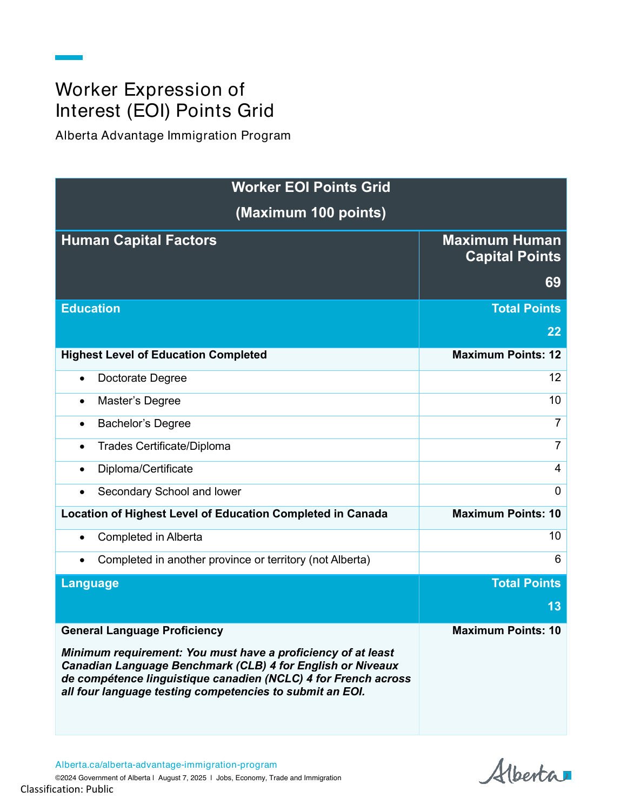
{kind=link}
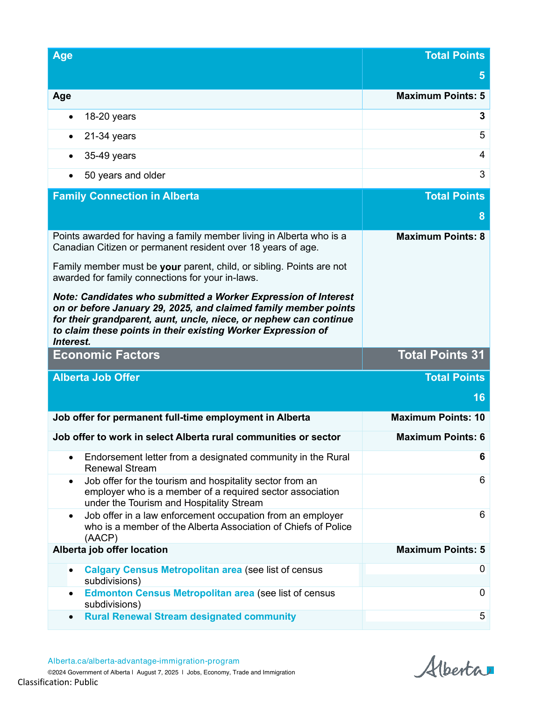
2025年历史邀请记录
官方标题：draws-2025
https://www.alberta.ca/system/files/im-aaip-draw-history-summary.pdf
发布机构：阿尔伯塔省政府 · 核对/留存日期：2026-09-24
下载留存原件（官方PDF文件）
文件指纹：6d512ff94143f0ac6be2356d7ad15784e90d53d3c3dbff1ba9cf2a0ca52f6e67
境外技工资格认可
官方标题：Out-of-Country Credentials
https://tradesecrets.alberta.ca/become-certified/recognized-trade-certificates/out-of-country-credentials/
发布机构：阿尔伯塔省政府 · 核对/留存日期：2026-09-24
下载留存原件（官方网页下载／原始数据文件）
查看文本提取（辅助检索，不代替原件版式）
文件指纹：5ec7fab40d56fb84e5772da78a437bb3d57d3e77ee7d30165d176e7d3532ca18
联邦指定学习机构名单
官方标题：Designated learning institutions list
https://www.canada.ca/en/immigration-refugees-citizenship/services/study-canada/study-permit/prepare/designated-learning-institutions-list.html
发布机构：加拿大联邦政府 · 核对/留存日期：2026-09-24
下载留存原件（官方网页下载／原始数据文件）
查看文本提取（辅助检索，不代替原件版式）
文件指纹：02ef89f10c7270dc4942ed564df55707580078ed6aed51d447e5cd6c3811432a
学习许可生活资金标准
官方标题：Study permit: Get the right documents
https://www.canada.ca/en/immigration-refugees-citizenship/services/study-canada/study-permit/get-documents/financial-support.html
发布机构：加拿大联邦政府 · 核对/留存日期：2026-09-24
下载留存原件（官方网页下载／原始数据文件）
查看文本提取（辅助检索，不代替原件版式）
文件指纹：72c35119c1f2f8c2f1629bf80b45ca670cb6f6d5140fcb10eb8ef14fecb4687c
过渡性开放工作许可资格
官方标题：Bridging open work permit for permanent residence applicants
https://www.canada.ca/en/immigration-refugees-citizenship/services/work-canada/pr-work-permits/bridging.html
发布机构：加拿大联邦政府 · 核对/留存日期：2026-09-24
下载留存原件（官方网页下载／原始数据文件）
查看文本提取（辅助检索，不代替原件版式）
文件指纹：0a83531eb3cf0d0c0339474ddb42a585a0ff543a4734152e1bd108bc09574a49
阿省护理及护理助理监管机构
官方标题：The 阿省执业护士与健康护理助理监管学院（College of Licensed Practical Nurses and Health Care Aides of Alberta，CLHA） Is the Regulatory College for Alberta LPNs and HCAs
https://www.clpna.com/
发布机构：学校或法定监管机构 · 核对/留存日期：2026-09-24
下载留存原件（官方网页下载／原始数据文件）
查看文本提取（辅助检索，不代替原件版式）
文件指纹：b327633ef238c4bc7f92addee8646b40199f6aa7bb46c2b59183fa0f1d72b55c
软件开发：官方项目页
官方标题：Software Development
https://www.sait.ca/programs-and-courses/diplomas/software-development
发布机构：学校或法定监管机构 · 核对/留存日期：2026-09-24
下载留存原件（官方网页下载／原始数据文件）
查看文本提取（辅助检索，不代替原件版式）
文件指纹：b4bdc957e0970e103b1fa79b508771c483e8382b9b8623d69bc817ccf3859640
市政土木技术：官方项目页
官方标题：Civil Engineering Technology - Municipal Major
https://www.sait.ca/programs-and-courses/diplomas/civil-engineering-technology-municipal
发布机构：学校或法定监管机构 · 核对/留存日期：2026-09-24
下载留存原件（官方网页下载／原始数据文件）
查看文本提取（辅助检索，不代替原件版式）
文件指纹：0b6013702d6856df6b6e967806765d8336f1590f300c47a1f53718459ef085df
机械工程技术：官方项目页
官方标题：Mechanical Engineering Technology
https://www.sait.ca/programs-and-courses/diplomas/mechanical-engineering-technology
发布机构：学校或法定监管机构 · 核对/留存日期：2026-09-24
下载留存原件（官方网页下载／原始数据文件）
查看文本提取（辅助检索，不代替原件版式）
文件指纹：657794da66612ad5625118a552a5bd27a8054ff41deb7b8bb4cfa5d4361acc87
飞机维修技术：官方项目页
官方标题：Aircraft Maintenance Engineers Technology
https://www.sait.ca/programs-and-courses/diplomas/aircraft-maintenance-engineers-technology
发布机构：学校或法定监管机构 · 核对/留存日期：2026-09-24
下载留存原件（官方网页下载／原始数据文件）
查看文本提取（辅助检索，不代替原件版式）
文件指纹：36e9c11e199fded4b45f32ce14054e46640c5dd86f5c1b8c6f9899386df9db92
烹饪艺术：官方项目页
官方标题：Culinary Arts
https://www.sait.ca/programs-and-courses/diplomas/culinary-arts
发布机构：学校或法定监管机构 · 核对/留存日期：2026-09-24
下载留存原件（官方网页下载／原始数据文件）
查看文本提取（辅助检索，不代替原件版式）
文件指纹：075c5b73c2c9b29c038b2112d4b266cab3b40ee4cef77bde206ee381547b0015
酒店与旅游综合方向：官方项目页
官方标题：Hospitality and Tourism Management - Multi-Disciplinary
https://www.sait.ca/programs-and-courses/diplomas/hospitality-and-tourism-management-multi-disciplinary
发布机构：学校或法定监管机构 · 核对/留存日期：2026-09-24
下载留存原件（官方网页下载／原始数据文件）
查看文本提取（辅助检索，不代替原件版式）
文件指纹：cb1a50b2bcf1b2af9dcc524a97821afd95cf2636b778f4798ddaf83b2c551495
{kind=link}
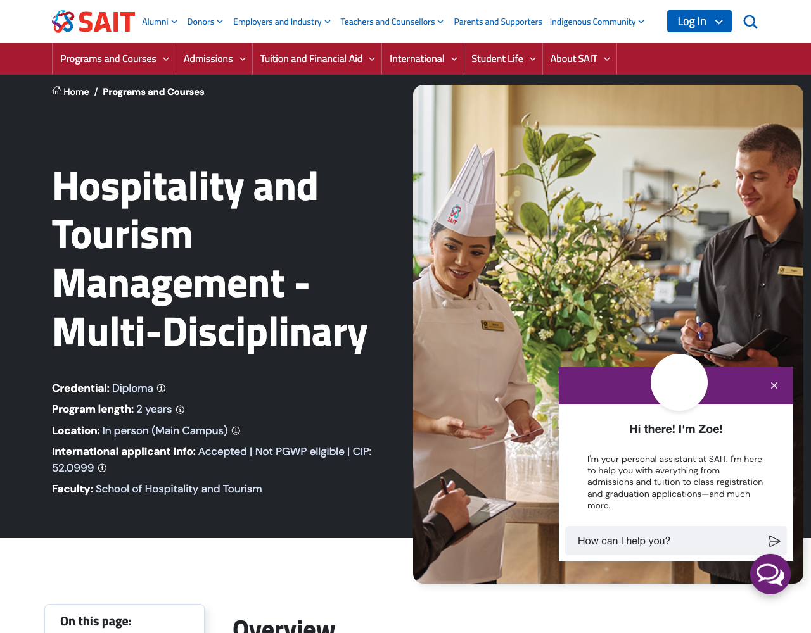
幼儿教育文凭：官方项目页
官方标题：Early Learning and Child Care – diploma
https://www.norquest.ca/programs-and-courses/programs/early-learning-and-child-care-diploma
发布机构：学校或法定监管机构 · 核对/留存日期：2026-09-24
下载留存原件（官方网页下载／原始数据文件）
查看文本提取（辅助检索，不代替原件版式）
文件指纹：f10a27054ce291a38bf5f21276b54c68ec3640b448b400738c34c3cac11409a3
幼儿教育文凭：录取要求
官方标题：Early Learning and Child Care – diploma
https://www.norquest.ca/programs-and-courses/programs/early-learning-and-child-care-diploma/program-requirements
发布机构：学校或法定监管机构 · 核对/留存日期：2026-09-24
下载留存原件（官方网页下载／原始数据文件）
查看文本提取（辅助检索，不代替原件版式）
文件指纹：60e2414f94f6c80e9340fd790b242eab6c914cbc9011c52559fbcd23bc3ce7a1
幼儿教育文凭：国际学费与课程
官方标题：Early Learning and Child Care – diploma
https://www.norquest.ca/programs-and-courses/programs/early-learning-and-child-care-diploma/costs-and-courses
发布机构：学校或法定监管机构 · 核对/留存日期：2026-09-24
下载留存原件（官方网页下载／原始数据文件）
查看文本提取（辅助检索，不代替原件版式）
文件指纹：9ee174838747fa34d553a84da9a9fe52ea4c415e8a2867c7d95c0e8cbe84b502
实用护理：官方项目页
官方标题：Practical Nurse
https://www.norquest.ca/programs-and-courses/programs/practical-nurse
发布机构：学校或法定监管机构 · 核对/留存日期：2026-09-24
下载留存原件（官方网页下载／原始数据文件）
查看文本提取（辅助检索，不代替原件版式）
文件指纹：69e4fa6a4c52e0c4c0bc5395a88a7c4ae2cd548e1ed5b973aaf6af455df41c90
实用护理：录取要求
官方标题：Practical Nurse
https://www.norquest.ca/programs-and-courses/programs/practical-nurse/program-requirements
发布机构：学校或法定监管机构 · 核对/留存日期：2026-09-24
下载留存原件（官方网页下载／原始数据文件）
查看文本提取（辅助检索，不代替原件版式）
文件指纹：6c609e1071b5273b315dc00a4ed785c814e326ebe6c6449134d36dc0d8d65c85
实用护理：国际学费与课程
官方标题：Practical Nurse
https://www.norquest.ca/programs-and-courses/programs/practical-nurse/costs-and-courses
发布机构：学校或法定监管机构 · 核对/留存日期：2026-09-24
下载留存原件（官方网页下载／原始数据文件）
查看文本提取（辅助检索，不代替原件版式）
文件指纹：399d85e834f9661ef33aee65b2227d82836c353b5ab534c6c84fa66f1eaa8a35
健康护理助理：官方项目页
官方标题：Health Care Aide
https://www.norquest.ca/programs-and-courses/programs/health-care-aide
发布机构：学校或法定监管机构 · 核对/留存日期：2026-09-24
下载留存原件（官方网页下载／原始数据文件）
查看文本提取（辅助检索，不代替原件版式）
文件指纹：0aef1218910c8d8108044db3d26b61456aa2f5080407184fabf5fde54cd1fb88
健康护理助理：录取要求
官方标题：Health Care Aide
https://www.norquest.ca/programs-and-courses/programs/health-care-aide/program-requirements
发布机构：学校或法定监管机构 · 核对/留存日期：2026-09-24
下载留存原件（官方网页下载／原始数据文件）
查看文本提取（辅助检索，不代替原件版式）
文件指纹：925ad993eb4fad4669af03d3fc1cdc2809d3aa72c1e869c6b79276d3f59b5b8a
健康护理助理：国际学费与课程
官方标题：Health Care Aide
https://www.norquest.ca/programs-and-courses/programs/health-care-aide/costs-and-courses
发布机构：学校或法定监管机构 · 核对/留存日期：2026-09-24
下载留存原件（官方网页下载／原始数据文件）
查看文本提取（辅助检索，不代替原件版式）
文件指纹：d38c50efda86e652f95b3c7e5747d579056318937c524eb32d5e6bf72e1befa7
农业管理：官方项目页
官方标题：Agricultural Management Diploma
https://www.oldscollege.ca/programs/areas-of-interest/agriculture/agricultural-management-diploma.html
发布机构：学校或法定监管机构 · 核对/留存日期：2026-09-24
下载留存原件（官方网页下载／原始数据文件）
查看文本提取（辅助检索，不代替原件版式）
文件指纹：1b81a81cc0daf1aab5e7dec45386c83bd25e9c47f2463f2ad870b6395231da71
南阿尔伯塔理工学院英语要求
官方标题：English Proficiency
https://www.sait.ca/admissions/meeting-requirements/english-proficiency
发布机构：学校或法定监管机构 · 核对/留存日期：2026-09-24
下载留存原件（官方网页下载／原始数据文件）
查看文本提取（辅助检索，不代替原件版式）
文件指纹：a5e114fd80f09bdaeac2e70ef28031e0bd3d788bce8adf23e739656f3d59c534
北阿尔伯塔理工学院国际学费
官方标题：International Students Tuition and Fees
https://www.nait.ca/nait/admissions/financial-planning/tuition-and-fees/international-students-tuition-and-fees
发布机构：学校或法定监管机构 · 核对/留存日期：2026-09-24
下载留存原件（官方网页下载／原始数据文件）
查看文本提取（辅助检索，不代替原件版式）
文件指纹：29fcbdc52c5633368b6ae1f7477c273a68996eb76dd00b24031bd973a0654524
阿省医疗监管机构目录
官方标题：Regulated health professions and regulatory colleges
https://www.alberta.ca/regulated-health-professions
发布机构：阿尔伯塔省政府 · 核对/留存日期：2026-09-24
下载留存原件（官方网页下载／原始数据文件）
查看文本提取（辅助检索，不代替原件版式）
文件指纹：d403800edbd28e1a217b9ea0fa4370e726d48e150bf2af712eb5d8ae692102fa
健康护理助理监管变化
官方标题：Health care aide program
https://www.alberta.ca/health-care-aide-program
发布机构：阿尔伯塔省政府 · 核对/留存日期：2026-09-24
下载留存原件（官方网页下载／原始数据文件）
查看文本提取（辅助检索，不代替原件版式）
文件指纹：8d614e302ae0087dd2365ec318704a3ab8c752c7167c81e362b8d11f6d95f381
阿省指定技工职业与认证目录
官方标题：Trade Profiles
https://tradesecrets.alberta.ca/trades-in-alberta/designated-trades-profiles/
发布机构：阿尔伯塔省政府 · 核对/留存日期：2026-09-24
下载留存原件（官方网页下载／原始数据文件）
查看文本提取（辅助检索，不代替原件版式）
文件指纹：d0f9ba318439ed5553a6f3b9fff08dd268ada322df6331b7635a420727f128dc
奥兹学院收费入口
官方标题：Tuition, Fees & Payments
https://www.oldscollege.ca/admissions/office-of-the-registrar/tuition-and-fees-payments/
发布机构：学校或法定监管机构 · 核对/留存日期：2026-09-24
下载留存原件（官方网页下载／原始数据文件）
查看文本提取（辅助检索，不代替原件版式）
文件指纹：f36d8e0639be85afb8c45107233ea1150f1ea5908f019922546bfca8fa856e1d
奥兹学院国际招生与语言
官方标题：International Admissions
https://www.oldscollege.ca/admissions/international-admissions/index.html
发布机构：学校或法定监管机构 · 核对/留存日期：2026-09-24
下载留存原件（官方网页下载／原始数据文件）
查看文本提取（辅助检索，不代替原件版式）
文件指纹：804f887dc8b45a87b8c5d9d2cbb7da16bdeab3ebf80f8a61506fc9c21ff86bde
联邦工作许可申请
官方标题：Work in Canada temporarily
https://www.canada.ca/en/immigration-refugees-citizenship/services/work-canada/permit/temporary/apply.html
发布机构：加拿大联邦政府 · 核对/留存日期：2026-09-24
下载留存原件（官方网页下载／原始数据文件）
查看文本提取（辅助检索，不代替原件版式）
文件指纹：c2fc182421ca08d8342f32a5808c607513daa4d96b814247279c365efd5e2ba5
联邦职业代码查找工具
官方标题：Find your National Occupational Classification (国家职业分类（National Occupational Classification，NOC）)
https://www.canada.ca/en/immigration-refugees-citizenship/services/immigrate-canada/express-entry/eligibility/find-national-occupation-code.html
发布机构：加拿大联邦政府 · 核对/留存日期：2026-09-24
下载留存原件（官方网页下载／原始数据文件）
查看文本提取（辅助检索，不代替原件版式）
文件指纹：59177f127e0056919615b6f89ee890741e753828e6ee7053f7347b9928dd42b5
国家职业分类一般就业要求官方数据
官方标题：国家职业分类2021第1.0版：职责与一般就业要求官方数据
https://www.statcan.gc.ca/en/subjects/standard/noc/2021/indexV1/noc-2021-v1.0-elements.csv
发布机构：加拿大联邦政府 · 核对/留存日期：2026-09-17
下载留存原件（官方网页下载／原始数据文件）
文件指纹：50c3e31a90b0150cc5b8efd29ec020c2fd9ea5fc5b0a171ed65d3cd9a0abf32f
证据边界：沿用知识库2026-09-17留存的官方版本；一般就业描述不是阿省执照决定。
奥兹学院2026—27官方收费表
官方标题：奥兹学院2026—27学年学费与日期官方表
https://www.oldscollege.ca/_media/admissions/2026-27-program-dates-fees.pdf
发布机构：奥兹学院 · 核对/留存日期：2026-09-24
下载留存原件（官方PDF文件）
查看文本提取（辅助检索，不代替原件版式）
文件指纹：abea186590ca80b5353806412f9b2e864d4553a6d4ce9180dc67f0c36b02e273
{kind=link}
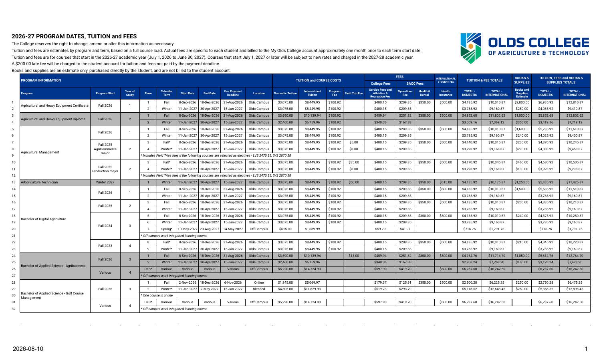